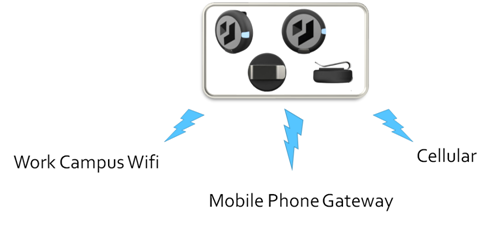
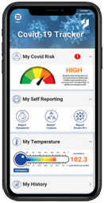

Alta-Futuris’s Infectious Diseases Tracker (IDT) solution
is a powerful implementation, leveraging blockchain development, in order to provide both user location tracking and Coronavirus location tracking, as well as correlation between the two datasets for Enterprise Management,while still maintaining user privacy.
Any location information that is tracked is first encrypted, then held in tokens in blockchain, which are only accessible with a secure private key, thus ensuring privacy on the data. No one can access the information without the user’s permission.
Users can indicate that they feel sick, or that they have tested positive for Covid-19. When a user indicates that they feel sick, and if their reported symptoms match against Covid-19 symptoms, then locations they previously travelled become Hot Spots within the system.
Using a wearable, user can be indicated their proximity position whenever they are out and are around other people, such as when visiting work locations of co-worker or interactions at work campus. This information can be used to protect the user, as it can be correlated with Coronavirus Hot Spots that help to inform people of potential exposure.
A user can indicate in the app that they want to compare their known locations against Hot Spots. The system then uses the user’s private key to decrypt their locations and compares those locations against the known Hot Spots at any given time. If there is overlap of where a user travelled with known Hot Spots, the system can give a user an indication of likelihood of exposure. Users can indicate that the app should automatically perform this check at a given interval, while still maintaining a user’s privacy.
Because the app can be used to create a clearer understanding of Hot Spots, officials can use the information to better combat spread of the disease. For example, if a number of people start to indicate Hot Zones, management officials can determine likely Covid-19 infections more quickly, even before users have actually officially tested positive.